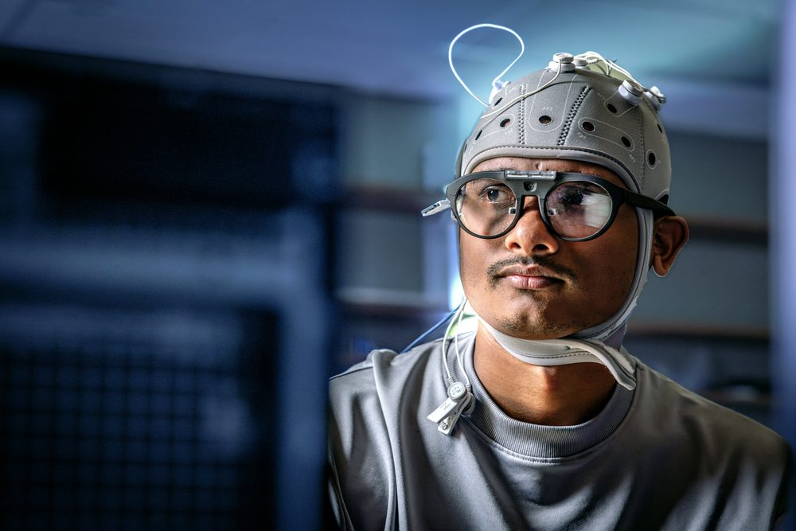
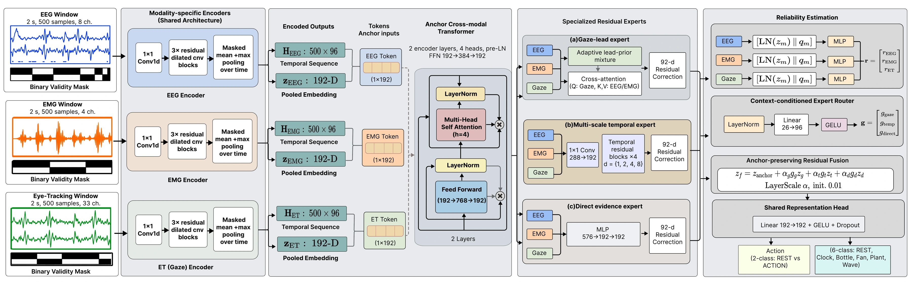
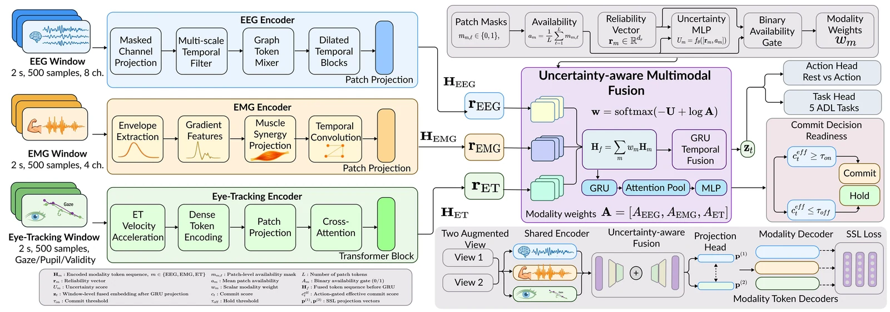
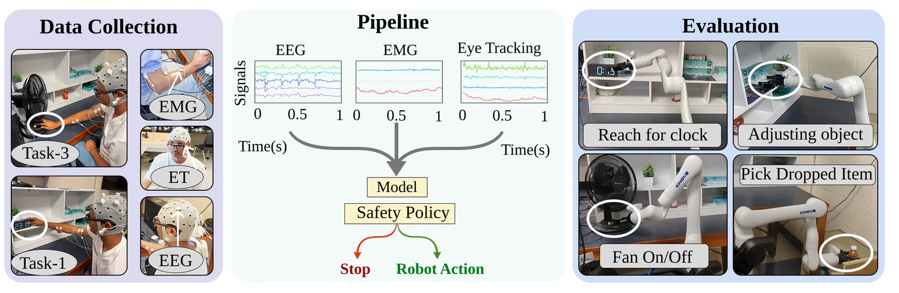
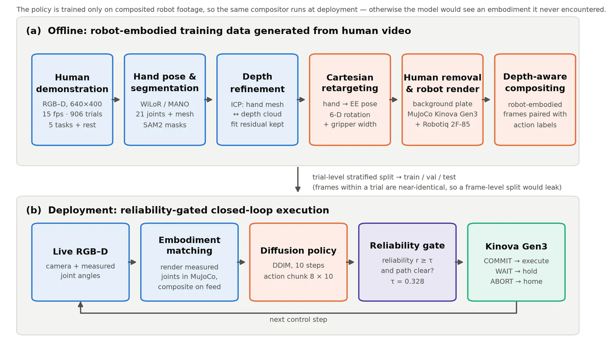
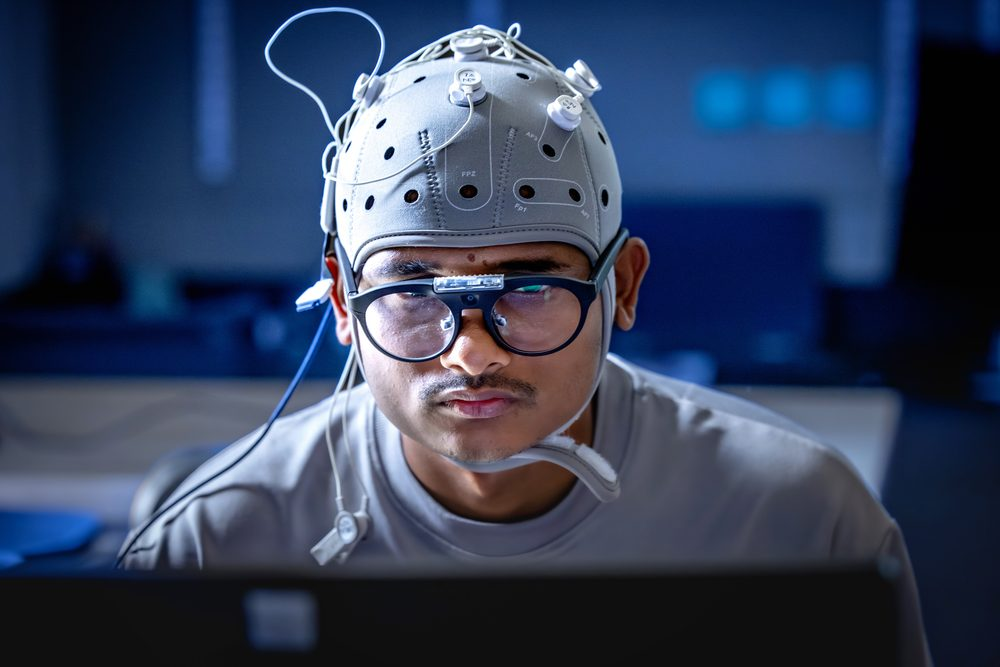

Decode human intent
Decode task and action intent from EEG while using EMG, gaze, vision, and task context to ground neural signals in ongoing behavior.
EEG decoding · Intent inferenceHuman–robot teaming · Multimodal AI
I’m Tipu Sultan, a Ph.D. researcher at Saint Louis University. My work spans EEG decoding, multimodal information fusion, vision-language-action models, and safe robot decision-making—so assistive robots can understand people and help without acting prematurely.

Multimodal human sensing with EEG, EMG, and eye tracking.
Research focus
My work connects neural and behavioral sensing, uncertainty-aware learning, vision-language-action (VLA) models, and robot decision-making. The goal is not only to predict what a person wants, but to determine whether the evidence is reliable enough—and whether the robot’s next action preserves the person’s ability to change course.
Decode task and action intent from EEG while using EMG, gaze, vision, and task context to ground neural signals in ongoing behavior.
EEG decoding · Intent inferenceEstimate source reliability and recognize when noisy, missing, or conflicting evidence is too uncertain to support confident action.
Information fusion · CalibrationExplore vision-language-action models that translate visual context and high-level instructions into grounded robot behavior.
VLA models · Embodied AIDesign robot policies that make useful progress while remaining recoverable, allowing people to revise a task before commitment becomes costly.
Decision-making · Safe assistanceCurrent directions
These projects extend my work on EEG decoding, multimodal intent recognition, and VLA-based robot learning toward a broader view of cooperation: what should a robot believe, and how should that belief constrain what it does?
T‑RO concept
An assistive robot rarely has a complete specification of what a person wants or what the environment will allow. This work studies how a robot can make useful progress under that uncertainty while preserving human revision, recoverability, and safe commitment.
The central question is when the robot should continue gathering evidence, take a reversible step, or commit to an action. The aim is proactive assistance that remains responsive to the person—not autonomy that gets ahead of them.
BioGazeFormer · Reliability-aware fusion
EEG, EMG, eye tracking, and contextual signals provide complementary views of intent—but their quality can change from moment to moment. I am developing fusion methods that estimate which sources are dependable, handle disagreement and dropout, and expose when the combined evidence is still insufficient.
The evaluation centers on robustness across people and task conditions, calibrated uncertainty, and falsifiable ablations—not a single best-case accuracy number.

Selected projects
Three systems that ground the broader research agenda in multimodal datasets, uncertainty-aware models, and assistive manipulation on physical hardware.

Commit-readiness for shared autonomy: learning when multimodal evidence is strong enough to release robot motion.
View project ↗
Reliability-gated EEG, EMG, and gaze fusion for robust intent recognition in assistive manipulation.
View project ↗
Learning assistive manipulation from ordinary human demonstrations with perception-aware robot execution.
View project ↗Selected publications
A short selection across assistive robotics, multimodal information fusion, and human-intent modeling. My complete publication record is available on Google Scholar.
View all publications
About
I am a Ph.D. student in Aerospace & Mechanical Engineering at Saint Louis University, advised by Prof. Madi Babaiasl in the MechaRithm Lab. My background spans mechatronics, data science, EEG decoding, multimodal machine learning, VLA models, and robot deployment.
I validate ideas with synchronized human-sensing systems and assistive manipulators such as the Kinova Gen3. I care especially about methods that remain dependable when sensors are noisy, people differ, and task conditions change.
Let’s work together
I’m open to research internships, collaborations, and applied ML/robotics opportunities in human–robot interaction, EEG decoding, information fusion, vision-language-action models, embodied AI, and assistive robotics.